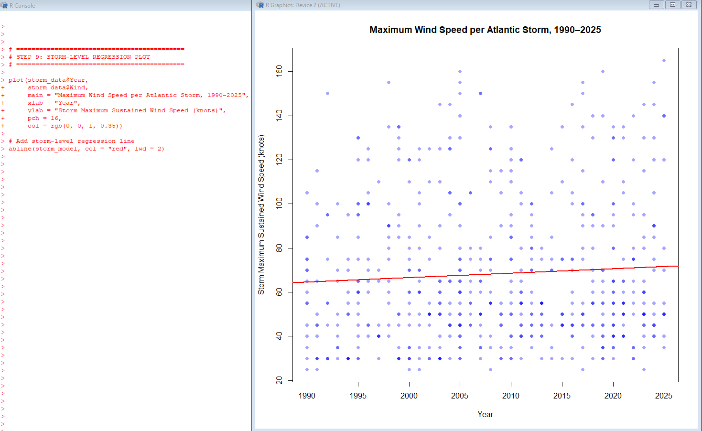
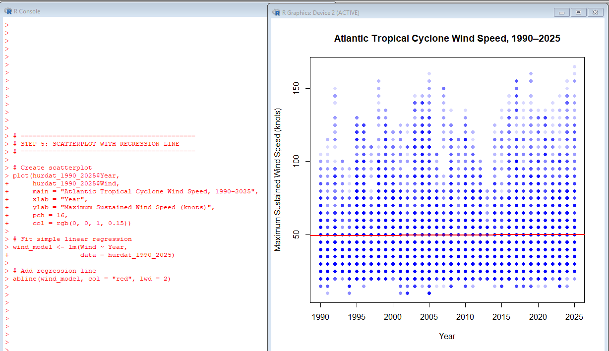

DATA SCIENCE CASE STUDY · R · NOAA HURDAT2
Atlantic tropical cyclone intensity, 1990–2025
Research question: Is there a statistically significant linear relationship between year and the maximum recorded sustained wind speed of individual Atlantic tropical and subtropical cyclones from 1990 to 2025?
- NOAA HURDAT2 Atlantic hurricane database
- Approximately 17,820 six-hourly observations in the selected period
- 593 storms aggregated to storm-level maximum wind
- Analysis performed in R
Approach
Parsed HURDAT2 storm headers and observations, structured fields for time, position, status, wind, and pressure, and converted missing-value codes to missing data. Aggregated observations to storm-level maximum sustained wind to reduce repeated-measures dependence in the primary regression.
Methods
Pearson correlation and simple linear regression were used to examine the relationship between year and maximum sustained wind, with residual diagnostics and supplementary sensitivity checks including Spearman correlation and year-clustered standard errors.
Compare the wind-speed figures


Results
Across 593 storms, the storm-level regression estimated a slope of 0.1965 knots per year, but the relationship was not statistically significant (p = 0.1317). Pearson correlation was weak (r = 0.0620), with year explaining approximately 0.38% of variation in maximum sustained wind. Spearman correlation and year-clustered inference were also nonsignificant. This finding concerns this specific analysis and should not be interpreted as proof that cyclone intensity is unchanged.
View research paper and methods on GitHub →
What this demonstrates
Real-world text parsing, cleaning observational data, designing an analysis unit, fitting regression models, checking assumptions, and communicating limitations responsibly.
Source
NOAA National Hurricane Center, HURDAT2
Source: NOAA/NHC HURDAT2. Original R scripts will be added to the repository after review for reproducibility.